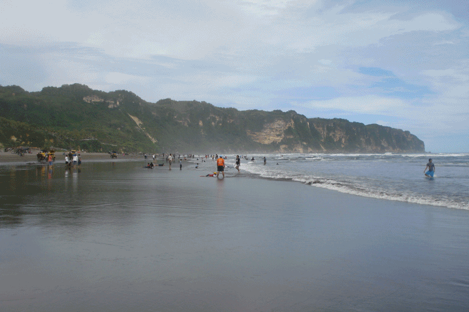

Description
Pantai Parangtritis (bahasa Jawa: ꦥꦱꦶꦱꦶꦂ ꦥꦫꦁꦠꦿꦶꦠꦶꦱ꧀, translit. Pasisir Parangtritis) adalah tempat wisata yang terletak di Desa Parangtritis, Kapanéwon Kretek,
Kabupaten Bantul, Daerah Istimewa Yogyakarta. Jaraknya kurang lebih 27 km dari pusat Kota Yogyakarta. Pantai ini menjadi salah satu destinasi wisata
terkenal di Yogyakarta dan telah menjadi ikon pariwisata di Yogyakarta. Pantai ini mempunyai nilai simbolis yang merupakan garis yang bersifat
magis yang menghubungkan Panggung Krapyak, Keraton Yogyakarta, Tugu Yogyakarta dan Gunung Merapi yang dikenal sebagai Garis Imajiner Yogyakarta.
Pantai yang terletak di sisi timur Pantai Parangkusumo ini memiliki legenda yang melekat dengan Ratu Kidul sebagai penguasa laut selatan dan keindahannya.
Pantai ini merupakan pantai yang cukup luas di Yogyakarta, berbeda dengan pantai-pantai di kawasan Yogyakarta lainya seperti Pantai di Gunungkidul yang
ukurannya relatif kecil.